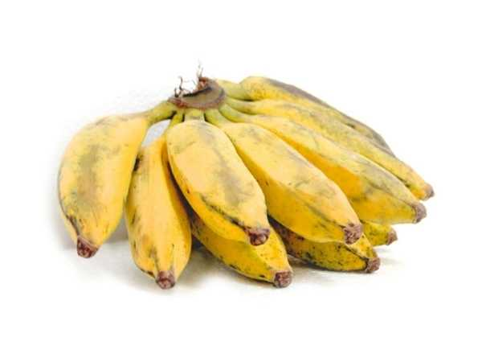

Musa acuminata
Common Names: Sirumalai Banana, Hill Banana, Small Banana
Local Name: Sirumalai Vazhai (Tamil)
Family: Musaceae
Origin: Sirumalai Hills, Dindigul, Tamil Nadu, India
Plant Type: Perennial herbaceous monocot
Variety: Sirumalai — small, sweet hill variety; GI-tagged from Tamil Nadu
Average Lifespan: Perennial via suckers; individual plant 18–24 months
| Growth Habit | Clumping herbaceous plant with pseudostem; shorter than most varieties |
| Plant Size | 1.5–2.5 meters tall; compact variety |
| Leaves | Large, oblong, bright green; 1.5–2 meters long |
| Fruit | Small, 8–12 cm; thin skin; very sweet, aromatic flesh |
| Fruit Color | Yellow when ripe; thin peel |
| Root System | Fibrous, shallow; spreads via underground rhizome |
| Climate | Tropical; thrives in hill conditions 600–1200 m elevation |
| Temperature Range | 20–30°C; tolerates cooler hill temperatures |
| Rainfall Requirement | 1200–2500 mm annually |
| Soil Type | Well-drained loamy soil rich in organic matter |
| Soil pH Preference | 6.0–7.5 |
| Sun Requirement | Full sun to partial shade |
| Spacing | 2–3 meters between plants |
| Water Requirement | Moderate to high; consistent moisture needed |
| Can it Grow in Pots? | Yes, in large containers (50+ liters) |
| Fertilizer Schedule | Monthly; potassium-rich fertilizer for fruit quality |
| Recommended Organic Fertilizers | FYM, vermicompost, wood ash, neem cake |
| Common Pests | Banana weevil, aphids, thrips |
| Common Diseases | Panama wilt, Sigatoka leaf spot, bunchy top virus |
| Flowering Months | 10–14 months after planting |
| Days to Harvest | 90–120 days after flowering |
| Average Yield per Plant | 8–15 kg per bunch |
| Pollination Type | Parthenocarpic; no pollination needed |
| Propagation by Cuttings | Sword suckers preferred; tissue culture also available |
| Commercial Production Regions | Sirumalai Hills, Dindigul district, Tamil Nadu |
| Market Uses | Premium fresh fruit; GI-tagged product commands higher price |
| Market Value (Approx.) | ₹60–120 per dozen; premium over regular bananas |
| Calories | 89 kcal per 100g |
| Dietary Fiber | 2.6 g per 100g |
| Potassium | 358 mg per 100g |
| Vitamin C | 8.7 mg per 100g |
Add your field observations here.